Domini LDAP
Un domini LDAP és una estructura jeràrquica utilitzada per emmagatzemar i organitzar informació relacionada amb usuaris, grups, dispositius i altres objectes dins d'una xarxa. El protocol LDAP (Lightweight Directory Access Protocol) permet accedir i gestionar aquesta informació de manera eficient.
Avantatges de LDAP respecte AD
- Lleugeresa i estàndardització: LDAP és un protocol lleuger i compatible amb múltiples sistemes operatius, cosa que el fa ideal per a entorns heterogenis.
- Flexibilitat: A diferència d'Active Directory, que està lligat a l'ecosistema de Windows, LDAP és independent i adaptable a diferents necessitats.
- Cost reduït: LDAP no requereix llicències específiques, a diferència d'Active Directory, que implica costos de llicències de Windows Server i clients.
Funcionalitats d'un Domini LDAP
Un domini LDap centralitza l'autenticació i l'administració d'usuaris, grups i recursos en una xarxa. Els objectes més comuns inclouen:
- Unitats Organitzatives (UO): Estructures lògiques que organitzen objectes com usuaris, grups o dispositius.
- Usuaris i grups: Permeten gestionar permisos i accés als recursos de la xarxa.
- Dispositius: Inclouen impressores, servidors i altres dispositius connectats.
Comandes i Eines Utilitzades
Slapcat
Slapcat és una eina que s'utilitza per exportar les dades del directori LDAP a un fitxer. Si no es mostra el domini, cal verificar:
- La configuració del directori.
- El contingut inicial del directori.
- Si és necessari, reinicialitzar o afegir dades correctes.
Fitxers LDIF
Els fitxers LDIF (LDAP Data Interchange Format) s'utilitzen per definir objectes al directori LDAP. Són essencials per a la importació i exportació de dades.
- Distinguished Name (DN): La primera línia d'un fitxer LDIF conté el DN, que identifica de manera única l'objecte al directori.
Creació d'un domini LDAP
Antes de començar cal recalcar que aquest exemple esta fet desde un Ubuntu Desktop, es recomana un Ubuntu Server ja que esta optimizat per utilitzar aquest serveis.
Primer que tot configurarem una IP estatica, es necesari assignar una IP estatic per evitar que aquesta canvie el qual no ens interesa en un servidor, un canvi de IP no dessitjat podria causar errors.
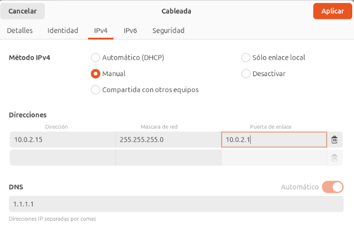
Canviarem el nom de la maquina a un nom mes correcte, per fer-ho efectuarem la comanda:
sudo nano /etc/hostname
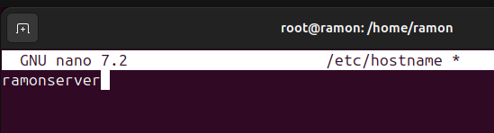
Assignarem el nom i la ip al /etc/hosts, aixi el sistema podra reconeixe el nom del server i domini, per poder fer aquests canvis efectuarem la comanda:
sudo nano /etc/hostw
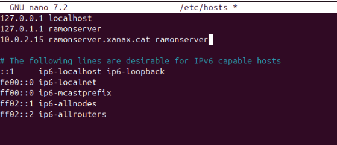
Instal·lacions necesaries LDAP
Ara que tenim la configuracio inicial finalitzada, començarem amb la instal·lació de paquets essencials per poder treballar amb LDAP. Aquets paquets son slapd i ldap-utils
sudo apt install slapd ldap-utils
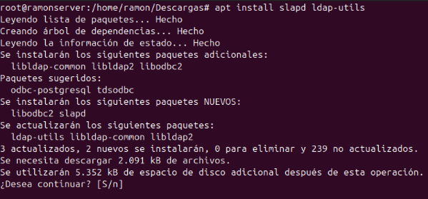
Comprovacio inicial LDAP
Després d'executar la comanda slapcat, es pot observar que el directori no es troba completament buit. En aquest cas, conté una configuració mínima inicial, amb el domini dc=nodomain. Això suggereix que el servidor LDAP està operatiu, però encara no s'ha configurat de manera adequada per incorporar un domini personalitzat o dades específiques addicionals.
Aquest pas és crucial abans de procedir a implementar la configuració necessària i afegir els objectes pertinents al directori LDAP.
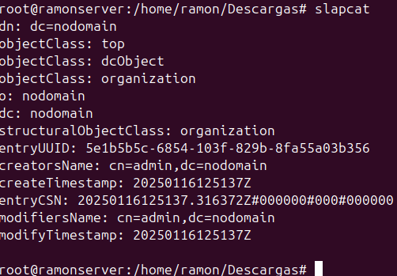
Configuració LDAP
Per poder configurar el server LDAP, efectuarem la comanda dpkg-reconfigure slapd ens apareixera una finestra nova on podrem començar amb la configuracio.
Nomes al entrar ja ens preguntara si volem omitir la configuració, indicarem que no per seguir amb la configuració
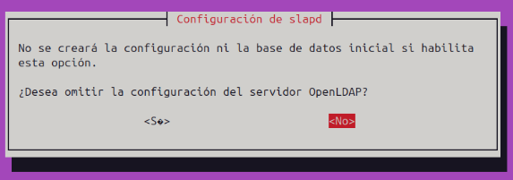
Ara ens demana un nom de domini.
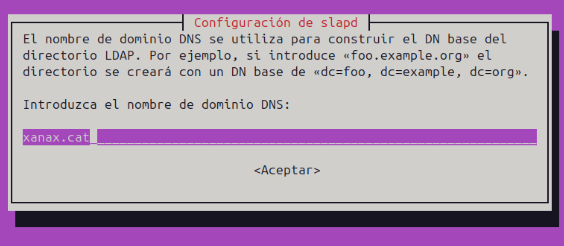
Aqui introduirem el nom de l'organització
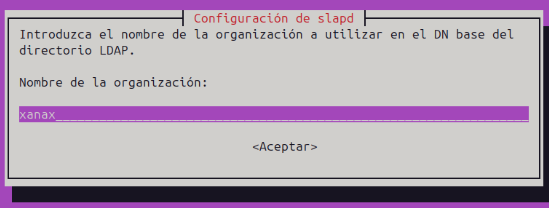
Configurem la clau d’accés per al compte principal del servidor LDAP. Guarda-la de manera segura, ja que és imprescindible per gestionar el directori i realitzar tasques d’administració.
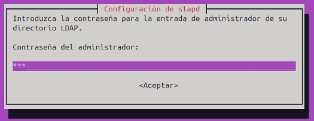
Ens demana si volem esborrar la base de dades al eliminar el paquet slapd. Triem l’opció Sí per confirmar l’eliminació completa.
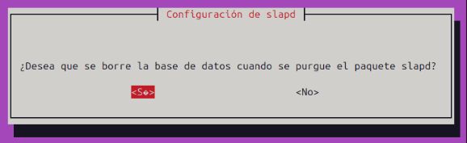
Si es detecta una base de dades antiga, ens demana si volem moure-la per permetre una instal·lació neta. Seleccionem Sí per continuar amb el procés.
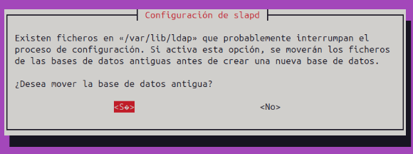
Un cop completats tots els passos, el servidor LDAP estarà configurat i llest per ser utilitzat. Tot haurà quedat preparat per gestionar el directori de manera correcta.
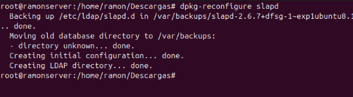
Comprovació final
Després de la configuració, executem la comanda slapcat per verificar que el domini i les dades es mostren correctament al directori LDAP. Si tot és correcte, les nostres dades haurien de ser visibles i ben estructurades.
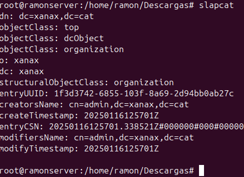
Fitxers LDIF (LDAP Data Interchange Format)
Els fitxers amb extensió .ldif (LDAP Data Interchange Format) són una eina essencial per definir i importar dades en un servidor LDAP. Aquests fitxers permeten configurar diversos objectes, com unitats organitzatives, usuaris, grups i altres estructures dins del directori.
Creació uo.ldif
Per il·lustrar-ne l'ús, hem creat un fitxer anomenat uo.ldif per afegir una Unitat Organitzativa (OU) amb el nom users. Aquest fitxer conté els següents elements clau:
- dn (Distinguished Name): Especifica la ubicació única de l'objecte dins del directori LDAP.
- objectClass: Defineix el tipus d'objecte que es crea (en aquest cas, una unitat organitzativa).
- ou: Indica el nom de la unitat organitzativa, en aquest exemple,
users.
Un cop creat, aquest fitxer es pot carregar al servidor LDAP utilitzant comandes com ldapadd, permetent afegir la nova estructura al directori.
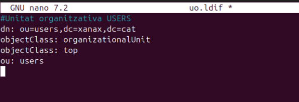
Creació grup.ldif
El fitxer grup.ldif s'utilitza per configurar grups dins del servidor LDAP, associant-los a una Unitat Organitzativa (OU) existent, com ara users. Aquests són els elements principals que es defineixen:
- dn (Distinguished Name): Especifica la ubicació única del grup dins del directori.
- objectClass: Indica el tipus d'objecte que es crea (en aquest cas,
posixGroup, per a grups compatibles amb l'estàndard POSIX). - cn: El nom del grup, com ara
alumnes. - gidNumber: Un identificador numèric únic per al grup (per exemple,
1001). - memberUid: Llista d'usuaris que formen part del grup (com
alu1).
Aquest fitxer es pot carregar al servidor LDAP utilitzant comandes com ldapadd, permetent la creació i gestió de grups de manera eficient.
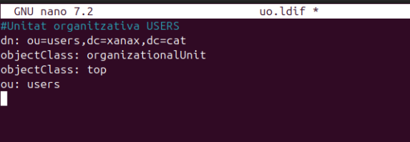
Creació usu.ldif
El fitxer usu.ldif s'utilitza per crear i configurar usuaris dins del servidor LDAP. Aquest fitxer conté els paràmetres bàsics necessaris per definir un compte d'usuari, però es pot ampliar amb informació addicional com correu electrònic, número de telèfon, etc.
- dn (Distinguished Name): Identifica de manera única l'usuari dins del directori.
- objectClass: Defineix les classes associades a l'usuari, com ara:
inetOrgPersoniorganizationalPersonper a dades personals i organitzatives.posixAccountishadowAccountper a compatibilitat amb sistemes POSIX i gestió de contrasenyes.- userPassword: Contrasenya de l'usuari (en format encriptat és recomanable).
- cn: Nom complet de l'usuari (exemple:
Primer). - sn: Cognom de l'usuari (exemple:
Alumne1). - gidNumber: Identificador del grup al qual pertany l'usuari (exemple:
1001). - uidNumber: Identificador únic de l'usuari (exemple:
1001). - homeDirectory: Directori personal de l'usuari (exemple:
/home/alu1). - loginShell: Shell predeterminada de l'usuari (exemple:
/bin/bash). - shadowExpire, shadowLastChange, shadowMax, shadowMin, shadowWarning: Paràmetres relacionats amb la caducitat i gestió de contrasenyes.
Aquest fitxer es pot utilitzar per afegir l'usuari al directori LDAP mitjançant comandes com ldapadd. A més, es poden incloure atributs addicionals, com correu electrònic o telèfon, segons les necessitats de l'organització.

Carregar fitxers .ldif al servidor LDAP
Un cop creats els fitxers .ldif, el següent pas és carregar-los al servidor LDAP per crear els objectes definits (unitats organitzatives, grups i usuaris) dins del directori. Això es realitza mitjançant la comanda ldapadd, que permet afegir dades al servidor LDAP
ldapadd -c -x -D "cn=admin,dc=xanax,dc=cat" -W -f <nom_fitxer>
Explicació dels paràmetres:
-
c: Continua processant els fitxers encara que es produeixin errors en algun.
-
x: Utilitza autenticació simple (sense xifratge complex).
-
D: Especifica el Distinguished Name (DN) de l'usuari administrador.
-
W: Demana la contrasenya de l'administrador interactivament.
-
f: Indica el nom del fitxer .ldif que es vol carregar.
Aquesta mateixa comanda es pot repetir per als altres fitxers, com ara grup.ldif i usu.ldif, per afegir tots els objectes al servidor LDAP.
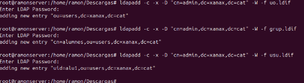
Comprovació
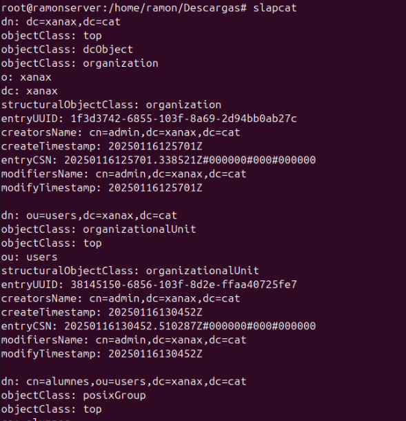
LDAP en Ubuntu Server
La configuració es basicament igual però la unica cosa que canvia es al configurar la xarxa, necesitaras fer-ho amb netplan, ara mostrarem com s'ha de fer.
sudo nano /etc/netplan/50-cloud-init.yaml
Afegim la IP i el servidor DNS al nostre gust, guardem el fitxer i surtim.
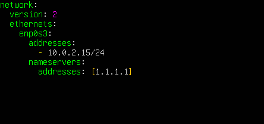
Aplicarem els canvis amb aquesta comanda:
sudo netplan apply
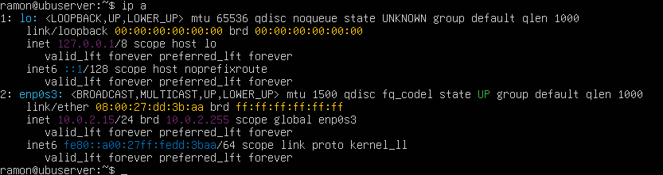